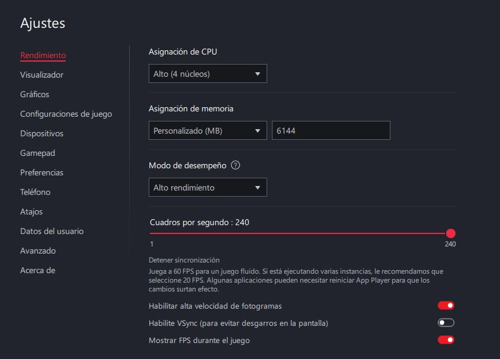
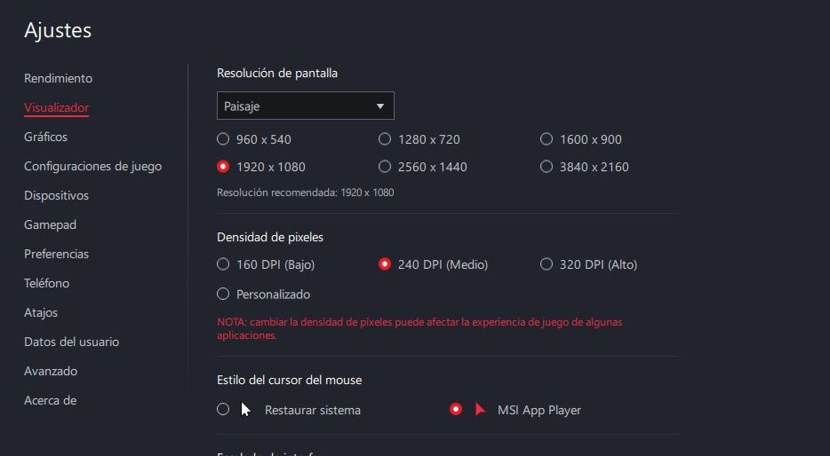
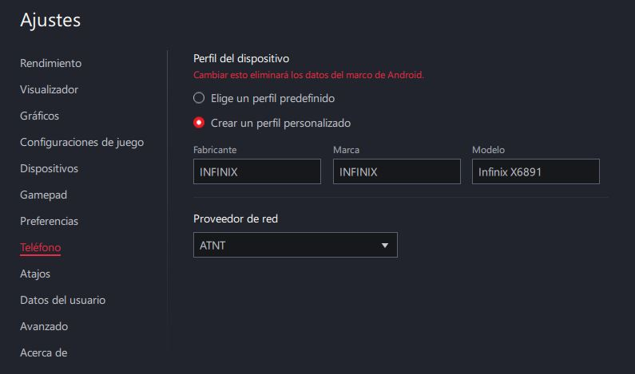

Buenas, ¿cómo se encuentran gente exploradora?
Aquí verán de todo para mejorar.
En esta página no les meteré tantos anuncios ni páginas que les puedan meter virus y sin tanto rollo.
Aquí les dejaré links de mis redes sociales como "INSTAGRAM, TIK TOK, DISCORD y YOUTUBE", pero aquí les dejaré todo tipo de información sobre emuladores, mapeos, regedits, configuraciones y también optimizaciones para la PC.
MSI App Player
MSI App Player es un emulador desarrollado en colaboración con MSI y basado en la tecnología de BlueStacks. Está orientado especialmente al gaming, ofreciendo funciones para mejorar el rendimiento, controlar el teclado y mouse, configurar la resolución, ajustar FPS y utilizar diferentes perfiles de dispositivos.


BlueStacks
BlueStacks es uno de los emuladores de Android más conocidos para PC. Permite instalar aplicaciones y juegos de Android y ofrece herramientas como mapeo de teclas, múltiples instancias, configuración de rendimiento, controles personalizados y ajustes gráficos.


Configuración de MSI App Player
Aquí encontrarás los pasos para configurar MSI App Player correctamente y obtener una buena estabilidad y rendimiento.
Así como también para BlueStacks encontrarás una buena configuración del emulador para obtener buenos FPS y un buen rendimiento.
Rendimiento
Esta sección controla cuántos recursos de la PC utiliza el emulador y la cantidad de FPS que puede alcanzar. En tu configuración aparecen: •Asignación de CPU: determina cuántos núcleos/procesadores de la PC puede utilizar MSI App Player. Tienes 4 núcleos.
•Asignación de memoria: determina cuánta RAM se reserva para el emulador. Tienes 6144 MB (6 GB).
•Modo de desempeño: controla el nivel de rendimiento del emulador. Tienes seleccionado Alto rendimiento.
•Cuadros por segundo (FPS): establece el límite máximo de FPS. Tienes configurado 240 FPS.
•Alta velocidad de fotogramas: permite utilizar una frecuencia de FPS superior a la configuración estándar.
•VSync: sincroniza los FPS con la frecuencia de actualización del monitor para reducir el screen tearing, aunque puede añadir cierta latencia.
•Mostrar FPS: muestra en pantalla los FPS actuales durante el juego.

Visualizador
Esta sección controla cómo se muestra la imagen del emulador en la pantalla. En tu configuración: Resolución de pantalla: tienes seleccionada 1920 × 1080, que determina la cantidad de píxeles que renderiza el emulador.1600 × 900 / 1280 × 720 / 960 × 540: son resoluciones menores que pueden consumir menos recursos.
2560 × 1440 / 3840 × 2160: ofrecen mayor definición, pero requieren más potencia.
Densidad de píxeles (DPI): controla el tamaño y la densidad de los elementos de la interfaz de Android. Tienes 240 DPI.
Estilo del cursor: permite elegir entre el cursor normal del sistema o el cursor utilizado por MSI App Player.

Dispositivo
Esta sección permite configurar qué dispositivo Android cree el juego o aplicación que estás utilizando.
En tu captura tienes un perfil personalizado:
Fabricante: INFINIX
Marca: INFINIX
Modelo: Infinix X6891
Proveedor de red: AT&T
Esto puede ser importante porque algunos juegos y aplicaciones modifican determinadas funciones dependiendo del modelo de teléfono detectado.
Por ejemplo, el perfil puede influir en:
Compatibilidad con determinados juegos.
Identificación del dispositivo.
Algunas opciones gráficas disponibles.
Compatibilidad con aplicaciones.
Comportamiento específico de ciertas aplicaciones.
